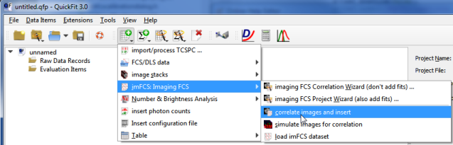
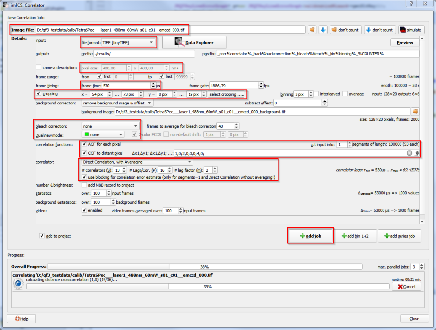
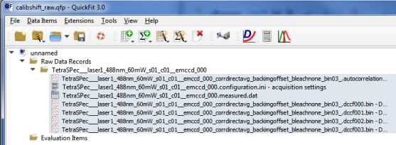
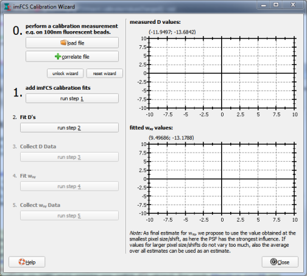
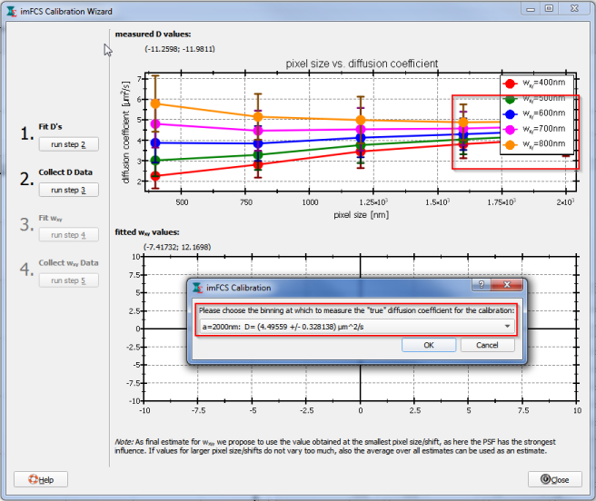

$$invisibleref:Bag2012:N. Bag, J. Sankaran, A. Paul, R. S. Kraut, and T. Wohland (2012): "Calibration and limits of camera-based fluorescence correlation spectroscopy: a supported lipid bilayer study." Chemphyschem 13, 2784-94$$
$$INVISIBLEREF_SPIMFCS_CAM$$
$$jankrieger_phdthesis_invisibleref$$
$$INVISIBLEREF_SPIMFCCS$$
$$qf_commondoc_header.start$$ $$qf_commondoc_header.end$$
$$startbox_note$$
See the help page on calibration and the tutorial on imFCS calibration for details on the theory of imaging FCS calibration, using pixel binning. Also see the references given at the end of this page.
$$endbox$$
Introduction
In addition to the method referenced in the box above, where the pixel size is variaed to estimate the diffusion coefficient, independent of the unknown PSF-parameters, there exists a second method that uses cross-correlating neighboring pixels to obtain this estimate. This method is also supported by the imFCS calibration wizard, but requires a bit more handy-work, as the other option (which is also usually used!).
Tutorial: SPIM/TIRF-FCS
Acquiring Data
First perform a measurement of the calibration sample, e.g. 0.5nM fluorescent latex spheres (diameter 100nm) in water with your lightsheet microscope, or a supported bilayer with a fluorescent dye on a TIRF microscope. You should acquire about 20x20 pixels in the center of the field of view (FOV) of you microscope.
$$warning:Ensure, that no aggregates were present during the measurement of the beads, since these might lead to problems and wronlgy estimated parameters in the calibration!$$
On a SPIM you will also have to determine the axial PSF-size $$math:w_z$$, e.g. by a bead scan (see http://www.dkfz.de/Macromol/quickfit/beadscan.html). YOu can also use the QuickFit-plugin PSF Beadscan to evaluate such a stack.
$$startbox_note$$For testing purposes, a dataset for calibration is available from http://www.dkfz.de/Macromol/quickfit/examples.html as calibration_tetraspec_2014_04_03.zip. This package contains a SPIM-FCS measurement with 100nm TetraSpec beads, which can be used for this tutorial. The longitudinal PSF-size was determined to be $$math:w_z=1552nm$$. The camera pixel size was $$math:a=400nm$$.
$$endbox$$
Image Series Correlation "by hand"
- Then create an empty project and use the imFCS correlation tool

to calculate the ACFs and CCFS to increasingly displaced pixels of the acquired image series.
- You should set up the dialog as shown in the following image:

For the data, mentioned above you can use a setting of the correlator as follows:
- tinyTIFF image reader
- no bleach correction (beads don't bleach)
- binning 1
- crop the central 20x20 pixels
- direct correlation, with averaging and 1 segment, use "blocking method"
- calculate ACF
- calculate CCF to distant pixels with ΔX,ΔY=1,0;2,0;3,0;4,0;
- Perform the correlation and finally return to your QuickFit project and check the imported data. If everything is fine (good curves, few outliers, mask the outliers, ...) you may proceed with the next step.
- The project should look as follows:

Calibration
The following steps can conveniently be controlled by the "imFCS calibration Wizard", which leads you step-by-step through the calibration. It is available in the menu Tools|imFCS Calibration Tool|imFCS Calbration Wizard. The wizard dialog will look like this:

$$startbox_note$$
This wizard is also automatically started by the imaging FCS/FCCS wizard from the last section ("Alternative ..."). This wizard also already performs the first step of the calibration, so start this section at step 2, if you used the imaging FCS/FCCS project wizard and already have the evaluation objects for the test-values of $(w_{xy})$!$$endbox$$
- Now you'll have to add imFCS fit objects that fits $$math:D(a, w_{xy})$$: Use
Data Items|Insert Evaluation|imagingFCS Calibration Tool|0: add imFCS calibration fits and enter a series of test-$$math:w_{xy}$$ values surrounding the expected $$math:w_{xy}$$ value (e.g. if we expect $$math:w_{xy}\approx 600nm$$, you could use $$math:w_{xy}= 400nm, 500nm, 600nm, 700nm, 800nm$$. Also enter the value of $$math:w_z$$ you determined before. Then a click on "OK" will create one imFCS fit object for each $$math:w_{xy}$$ you entered. Now you'll have to fit every run/pixel in each of these fit evaluations. Check in each that a proper model is selected and $$math:w_{xy}$$ and $$math:a$$ are set properly and fixed.
$$startbox_note$$
For the calibration of a SPIM-FCS measurement you should use the model $$fitfunction:name:fcs_spim_diffe2_newveff$$
Then a click on "OK" will create one imFCS fit object for each $$math:w_{xy}$$ you entered. Now you'll have to fit every run/pixel in each of these fit evaluations. Check in each that a proper model is selected and $$math:w_{xy}$$ and $$math:a$$ are set properly and fixed.
$$startbox_note$$
For the calibration of a SPIM-FCS measurement you should use the model $$fitfunction:name:fcs_spim_diffe2_newveff$$
and for TIRF-FCS calibration the model $$fitfunction:name:fcs_tir_diffe2$$. In the TIRF case you won't have to supply $$math:w_z$$, so ignore this input widget.
$$endbox$$
- The fitting can be done automatically with step: Fit D's in the wizard (or with the menu entry
Data Items|Insert Evaluation|imagingFCS Calibration Tool|1: fit all D's) which will open one evaluation object after the other and perform the fit!
- Now you can use step: collect D Data in the wizard (or
Tools|imagingFCS Calibration Tool|2 Collect D data) to create the plot of $$math:D(a, w_{xy})$$. The plot will be shown in the wizard dialog and will be inserted as table object with an associated plot into the project (for later reference).

- The tool will then give you the possibility to select a binning at which to take the average $$math:D$$ for the final fit and insert an object for the final $$math:w_{xy}$$-fit. You should use the $$math:D$$-value at a pixel size, where the $$math:D(a)$$-curves have nearly converged (and the averages do not change much). This step is illustrated in the screenshot in the last step! FOr the example dataset given above, $(a=2000\mathrm{nm})$ should give $(D\approx 4.5\mathrm{\mu m^2/s})$ and is a good choice.
If you add the required fit evaluation by hand, make sure that $$math:D, a$$ are fixed and $$math:w_{xy}$$ is free, but the wizard will do that for you.
- Then fit all runs/pixels in the new evaluation, by clicking on step: Fit wxy of the wizard.
- A final click on step: Collect wxy data of the wizard ( or
Tools|imagingFCS Calibration Tool|4 Collect wxy data) will then create the plot of $(w_{xy}(a))$ and display it in the wizard's dialog. From this plot you can then read the calibrated $$math_w_{xy}$$.
 Usually the best estimate for $$math:w_{xy}$$ is the value, determined at the smallest binning (in the given example $(a=400\mathrm{nm})$, since there the fit model is most sensitive to $$math:w_{xy}$$. Again this plot is also added to the table RDR in the project for later reference.
Usually the best estimate for $$math:w_{xy}$$ is the value, determined at the smallest binning (in the given example $(a=400\mathrm{nm})$, since there the fit model is most sensitive to $$math:w_{xy}$$. Again this plot is also added to the table RDR in the project for later reference.
For the given example the final result will be $[w_{xy}=(687\pm110)\mathrm{nm}.]$
$$startbox_note$$
The two tools used above will scan the currently opened project and find those evaluation objects and raw data records used for the calibration. Tool 1 (step 2) extracts the average and standard deviation of the $$math:D$$ extracted from the fit. It also leaves out masked pixels! To offer a list of binnings to choose from the true $$math:D$$ it then averages the $$math:D$$ resulting from the fits at different binnings. The second tool averages over the $$math:w_{xy}$$ obtained from the last fits. It also ignores the masked pixels.
$$endbox$$
Tutorial: SPIM/TIRF-FCCS, or dual-color microscope
In the case of a dual-color microscope (as e.g. used for SPIM-FCCS), the two color channels are often imaged in parallel, using a dual-view optics, or two cameras. Here the two color channels are usually calibrated separately. For a dual-view, a single frame form a measurement usually looks like this:
 The calibration is done exactly, as described above, but the cropping should select the central region (20x20 pixels) in the left image half for the green channel and the central region (20x20 pixels) in the right image half, i.e.:
The calibration is done exactly, as described above, but the cropping should select the central region (20x20 pixels) in the left image half for the green channel and the central region (20x20 pixels) in the right image half, i.e.:
- green/left: x=22...41, y=0..19
- red/right: x=86...105, y=0..19
As an additional test of your microscope alignment, you can check whether the reference diffusion coefficients determined in step 4 (see above) are equal (within their errors) for both clor channels.
Reference
$$references$$